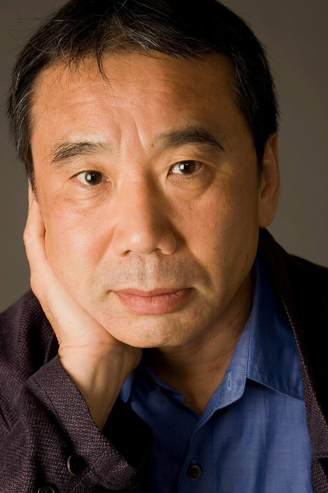

About
 Haruki Murakami (村上 春樹, Murakami Haruki, born January 12, 1949) is a Japanese writer. His novels, essays, and short stories have been bestsellers in Japan as well as internationally, with his work translated into 50 languages and selling millions of copies outside Japan. He has received numerous awards for his work, including the Gunzou Prize for New Writers, the World Fantasy Award, the Frank O'Connor International Short Story Award, the Franz Kafka Prize, and the Jerusalem Prize, whose previous recipients include J.M. Coetzee, Milan Kundera, and V.S. Naipaul.Biography
Murakami was born in Kyoto, Japan, during the post-World War II baby boom and raised in Nishinomiya, Ashiya and Kobe. He is an only child. His father was the son of a Buddhist priest, and his mother is the daughter of an Osaka merchant. Both taught Japanese literature.
His father was involved in the Second Sino-Japanese War, and was deeply traumatized by it, which would, in turn, affect Murakami.
Since childhood, Murakami has been heavily influenced by Western culture, particularly Western as well as Russian music and literature. He grew up reading a wide range of works by European and American writers, such as Franz Kafka, Gustave Flaubert, Charles Dickens, Kurt Vonnegut, Fyodor Dostoyevsky, Richard Brautigan and Jack Kerouac. These Western influences distinguish Murakami from the majority of other Japanese writers.
Murakami studied drama at Waseda University in Tokyo, where he met Yoko, now his wife. His first job was at a record store. Shortly before finishing his studies, Murakami opened a coffee house and jazz bar, Peter Cat, in Kokubunji, Tokyo, which he ran with his wife, from 1974 to 1981.